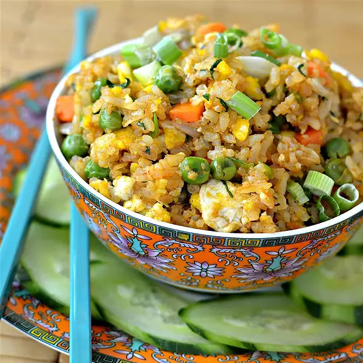

Fried Rice

A classic. Inspired by mum, passed on by me.
A new take on a traditional classic. Any meat can be used, though prawns, bacon, spam, chinese sausage or pork are (in my opinion) the best alternatives. Ensure the pan is HOT when cooking. This recipe is sure to be a hit!
Ingredients
(measurements are guidelines, feel free to adjust to taste)
- 2 teaspoons canola oil, or more as needed
- 2 eggs
- 1/2 tsp. water
- 2 tsp. sesame oil, divided
- 1/2 onion, diced
- 1 clove garlic, minced
- 1/4 cup frozen peas and carrots, thawed and patted dry with paper towel
- 2 cups cold jasmine rice
- 2 tsp. light soy sauce
- 1 tsp. fish sauce
- 1 tbsp. sriracha sauce, or to taste (optional)
- 1/2 tsp. white sugar
- 1/2 tsp. salt, or to taste
- 1/2 tsp. ground white pepper, or to taste
- 1/2 tsp. monosodium glutamate (MSG) (optional)
- 1/4 cup chopped green onion, or to taste, divided
- 1/4 cup chopped cilantro, or to taste (optional)
- 1 cucumber (optional)
Steps
- Heat 2 teaspoons canola oil in a large wok or skillet over high heat until smoking.
- Beat eggs and water together in a bowl until smooth. Pour beaten egg mixture into the skillet, let it cook in the oil briefly to begin to firm, and then scramble lightly with a wooden spoon until the eggs are cooked and shiny, 2 to 3 minutes. Remove cooked eggs to a plate.
- Pour 1 teaspoon sesame oil into the hot pan. Add enough canola oil to cover the cooking surface of the pan and heat to smoking. Saute onion and garlic in oil until fragrant, 1 to 2 minutes; add peas and carrots and cook until hot, 1 to 2 minutes more. Return cooked eggs to the pan.
- Gradually add rice to the skillet, breaking and tossing chunks to break into individual grains and mixing with vegetables; cook and stir until the rice starts to turn a slight brown colour and is completely hot, 2 to 3 minutes.
- Stir soy sauce, fish sauce, sriracha sauce, sugar, salt, 1/2 teaspoon white pepper, and monosodium glutamate into the rice mixture; continue to cook and stir until the grains of rices are no longer sticking together, 2 to 3 minutes more. Remove pan from heat and sprinkle green onion and cilantro over the fried rice; toss to mix.
-
Peel outside skin of cucumber with vegetable shredder to create a ragged design on the outside. Slice cucumber diagonally and arrange in a circle around the serving platter. Serve rice in middle of platter, topping with additional green onion and a dash of white pepper.
Cooks Notes
Do not add too much rice to the pan at any one time or toss too vigorously or the pan will cool down, ensuring a soggy dish!
If using meat, add after cooking onion and garlic and cook thoroughly before moving on to peas and carrots.
Use day-old rice if you can. (I usually prepare the rice the night before)
Nutrition Facts
Per Serving: 906 calories; protein 21.9g; carbohydrates 168.2g; fat 14.8g; cholesterol 186mg; sodium 1598mg.
Back to home
Recipe Source